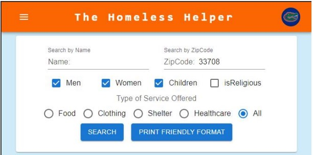

The Homeless Helper
 The Homeless Helper web application allows homeless individuals, who are often transient, to access
information about local resources available to them quickly and easily. Although many homeless
individuals have wifi-enabled cell phones, the app includes a print function to allow support staff in
emergency rooms and other locations to quickly generate and provide a list of local
resources to homeless customers. Emergency rooms in particular serve many transient homeless individuals but often do
not have knowledgeable staff on hand who can direct these individuals to shelters, soup kitchens, or other
resources. This app allows service providers to upload information about the resources they provide and relies
on local volunteers to monitor and maintain an accurate list of services within a specific region.
Please visit the Github Repository to view the source code
and run the developer version of the app. The app uses Google Maps to automatically identify the user's zip
code and load a list of nearby resources. However, please note that for security reasons the API key
providing this functionality is not included in the repository.
I supported this project as a member of a four-person team. My contributions include the navigation bar
functionality, the front end of the sign up and log in pages, and the about page. In developing the project,
my team employed Agile/Scrum, Kanban, and Test-Driven Development methodologies. We implemented the web app
prototype over two two-week sprints.
You can download a copy of our project documentation here.